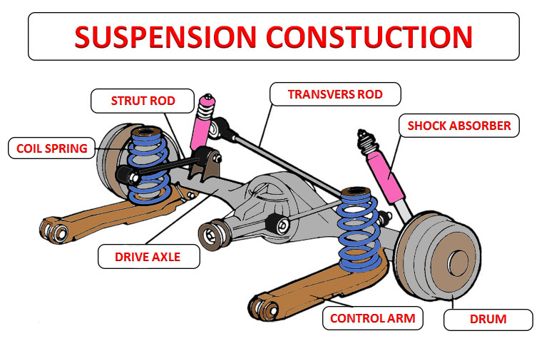
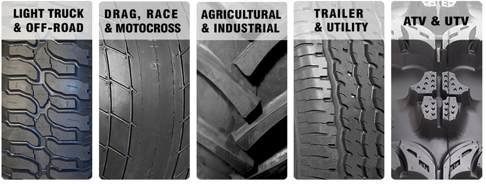
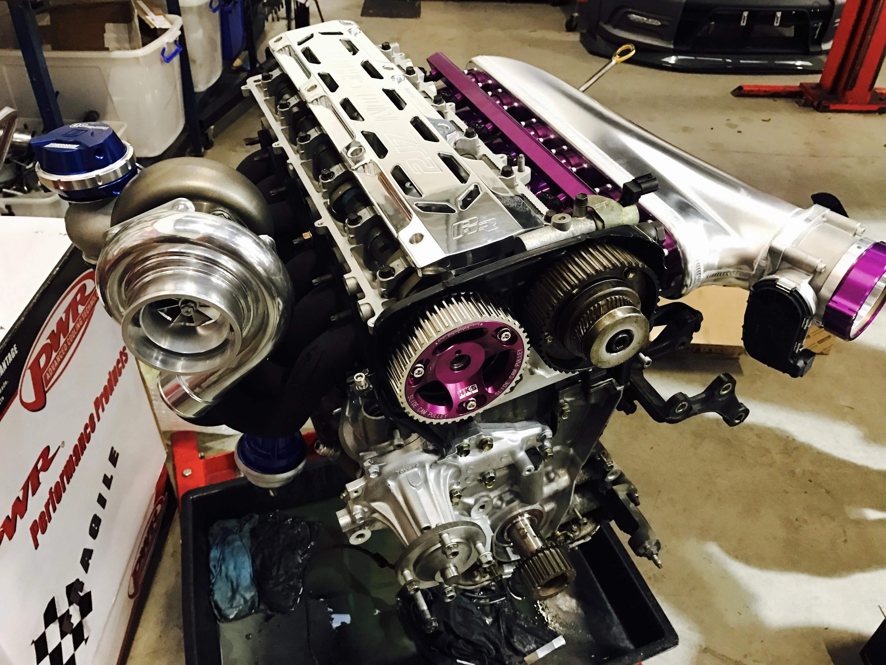

Most Important Modifications for Drift Cars
Suspension
One of the most important modifications for drift cars is upgrading the suspension. This includes components such as coilovers, sway bars, and control arms. A properly tuned suspension will allow the car to maintain maximum grip through corners, and will also provide more predictable handling characteristics.
Differential

The differential is another key component to upgrade for drift cars. A limited slip differential (LSD) will allow the rear wheels to spin at different rates, making it easier to initiate and maintain a drift. An LSD also provides better traction in low grip situations.
Tires
The right tires can make all the difference when it comes to drifting. Soft compound tires with a high grip coefficient will provide more traction and allow the car to slide more predictably. Many drifters also opt for wider rear tires to increase grip and stability.
Brakes

Upgrading the brakes is important for any high-performance car, and drift cars are no exception. A big brake kit will provide more stopping power and better heat dissipation, which is important for extended drifting sessions.
Engine
NOTE:
This is a 2jz-Gte engine in the supra MK IV it's a powerful, turbocharged inline-six engine made by Toyota, commonly used in sports cars like the Supra and capable of producing up to 320 horsepower and 315 lb-ft of torque.
It is known for its durability and ability to handle high boost pressures.
While not as important as the suspension, differential, tires, and brakes, upgrading the engine can provide additional power and torque for more impressive drifts. Common engine modifications for drift cars include turbochargers, exhaust systems, and engine tuning.